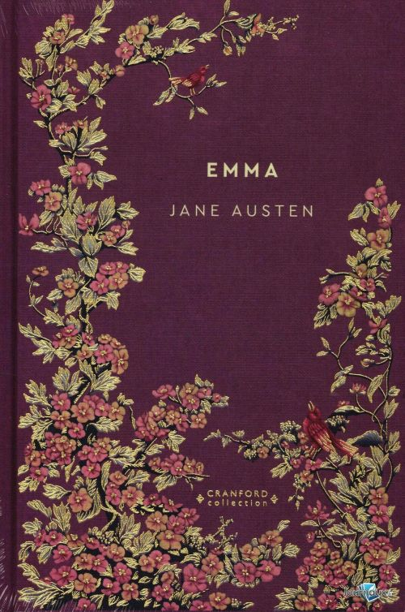
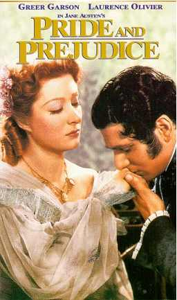

“No es lo que decimos o pensamos lo que nos define, sino lo que hacemos”
Biografía
Jane Austen (nacida el 16 de diciembre de 1775 en Steventon, Hampshire, Inglaterra; fallecida el 18 de julio de 1817 en Winchester, Hampshire) fue una destacada novelista inglesa, conocida por sus agudas observaciones sobre la sociedad y la vida cotidiana de la pequeña nobleza rural. Nació en Steventon, donde su padre, el reverendo George Austen, era rector. Fue la segunda hija y séptima de ocho hermanos: seis varones y dos mujeres. Su compañera más cercana fue su hermana mayor, Cassandra; ninguna de las dos se casó. Su padre, un erudito, fomentó en sus hijos el amor por la lectura y el conocimiento, mientras que su madre, Cassandra Leigh, era ingeniosa y creativa, famosa por sus versos y cuentos improvisados. La familia disfrutaba de la actuación y los juegos teatrales, lo que brindó a Jane un entorno estimulante para su imaginación y escritura. Desde joven, Jane mostró gran interés por la lectura y la escritura, componiendo relatos y obras cortas que más tarde se recopilarían en su Juvenilia. Sus viajes a Bath y Londres, así como su contacto con la familia y amigos de la nobleza rural y del clero, ampliaron su visión del mundo y le proporcionaron material para sus novelas, que a menudo reflejan la vida social, las relaciones y el matrimonio en la Inglaterra rural y urbana de su época. Austen comenzó a publicar de manera anónima en 1811 con Sense and Sensibility, seguida por otras cinco novelas completas: Pride and Prejudice, Mansfield Park, Emma, Northanger Abbey y Persuasion. Sus obras destacan por su ironía, realismo y aguda crítica social, centradas especialmente en el papel de la mujer y las expectativas sociales de su tiempo. Aunque recibió reconocimiento limitado durante su vida, Jane Austen se convirtió en una autora de referencia en la literatura inglesa. Sus novelas siguen siendo leídas, estudiadas y adaptadas a cine y televisión, manteniendo vivo su ingenio, su humor y su mirada crítica sobre la sociedad.
Obras
Sentido y sensibilidad (1811)
Sinopsis
Sentido y Sensibilidad cuenta la historia de las hermanas Dashwood, Elinor y Marianne, que enfrentan la pérdida de su hogar y la precariedad económica tras la muerte de su padre. Mientras Elinor encarna la prudencia y la razón, Marianne se deja guiar por la pasión y la emoción. Sus vidas amorosas se ven puestas a prueba: Marianne se enamora de un joven atractivo pero engañoso, mientras que Elinor lidia con un afecto secreto y complicado hacia Edward Ferrars. La novela explora cómo la sensatez y la sensibilidad influyen en el amor, la familia y las decisiones en la Inglaterra rural del siglo XIX.
Analisis y recepcion
Sentido y Sensibilidad tuvo un largo período de gestación. Jane Austen comenzó a escribirla alrededor de 1795 con el título provisional Elinor y Marianne, y la revisó considerablemente en 1809 antes de publicarla en 1811, pagando incluso parte de la edición. Como primera novela publicada de Austen, ya mostraba las características que serían su sello distintivo: observación perspicaz de la sociedad, personajes bien delineados y un ingenio sutil que combina crítica social y humor. La obra explora el contraste entre la sensatez y la sensibilidad, encarnadas en las hermanas Elinor y Marianne, y plantea la pregunta de si la mejor manera de vivir es equilibrar la razón y la emoción, o inclinarse hacia una de ellas. Desde su publicación, la novela recibió críticas favorables, elogiando su originalidad y estilo elegante, y ha sido objeto de numerosos estudios literarios que destacan su compleja construcción de personajes y su visión de las relaciones humanas y la posición de la mujer en la sociedad inglesa de principios del siglo XIX.
Orgullo y prejuicio (1813)

Sinopsis
Orgullo y Prejuicio narra la historia de Elizabeth Bennet, una joven inteligente y perspicaz que forma parte de una familia de clase media con cinco hermanas. La vida de Elizabeth se complica cuando conoce al adinerado y orgulloso Sr. Darcy. Inicialmente, ambos se sienten repelidos por los defectos del otro: Elizabeth por su orgullo y Darcy por sus prejuicios hacia su familia y posición social. A medida que se enfrentan a malentendidos, diferencias sociales y rivalidades familiares, aprenden a superar sus errores y prejuicios. La novela explora temas como el matrimonio, la posición social, el amor verdadero y la importancia de la introspección.
Analisis y recepcion
Orgullo y Prejuicio, publicada por primera vez en 1813, consolidó a Jane Austen como una autora destacada de la literatura inglesa. La novela combina un agudo sentido del humor, crítica social y desarrollo profundo de personajes, especialmente de mujeres jóvenes que buscan equilibrar sus deseos personales con las expectativas sociales. El título refleja los rasgos centrales de los protagonistas: el orgullo de Darcy y los prejuicios de Elizabeth. Austen desarrolla con maestría la tensión entre estas características, mostrando cómo la reflexión y la autocrítica permiten a los personajes evolucionar. Desde su publicación, la obra recibió elogios por su ingenio, originalidad y realismo. Ha sido ampliamente estudiada por críticos y académicos, adaptada innumerables veces al cine, la televisión y el teatro, y continúa siendo una de las novelas más leídas y queridas de la literatura inglesa, destacándose tanto por su entretenimiento como por su visión crítica de las normas sociales de la época.
Parque Mansfield (1814)

Sinopsis
Mansfield Park sigue la vida de Fanny Price, una joven humilde que es enviada a vivir con sus ricos tíos, los Bertram, en la elegante finca de Mansfield Park. A lo largo de los años, Fanny crece en un entorno marcado por la riqueza, las normas sociales y las intrigas familiares, y se enfrenta a dilemas morales que ponen a prueba su carácter. Mientras desarrolla afecto por su primo Edmund, Fanny observa los errores, vanidades y pasiones de quienes la rodean, manteniéndose fiel a sus principios y valores. La novela explora temas de moralidad, matrimonio, clase social y las complejas relaciones humanas en la Inglaterra del siglo XIX.
Analisis y recepcion
Parque Mansfield, publicada en 1814, se distingue de las otras novelas de Austen por su tono más serio y reflexivo. Austen ofrece una profunda crítica social, mostrando cómo la riqueza y el estatus pueden corromper la conducta y cómo la virtud y la integridad de Fanny contrastan con la frivolidad de su entorno. La obra también destaca por su tratamiento del crecimiento moral y emocional de la protagonista: Fanny representa la sensatez y la rectitud frente a las tentaciones y el comportamiento cuestionable de la alta sociedad. Aunque inicialmente recibió críticas mixtas —algunos lectores la consideraron menos entretenida que Orgullo y Prejuicio o Sentido y Sensibilidad—, con el tiempo ha sido reconocida por su complejidad psicológica, su crítica social y su enfoque ético, consolidándose como una de las novelas más maduras y sofisticadas de Jane Austen.
Emma (1815)
Sinopsis
Emma narra la vida de Emma Woodhouse, una joven adinerada, hermosa y confiada en su propio juicio, que disfruta organizando la vida amorosa de quienes la rodean. Aunque se considera una experta casamentera, Emma se enfrenta a malentendidos, errores de percepción y lecciones sobre orgullo, prejuicio y autoconocimiento. Su relación con el reservado y sensato Sr. Knightley se desarrolla gradualmente, llevándola a reconocer sus propios sentimientos y limitaciones. La novela explora el crecimiento personal, la amistad, el amor y las sutilezas de la sociedad inglesa del siglo XIX.
Analisis y recepcion
Emma, publicada en 1815, es una de las obras más sofisticadas y complejas de Jane Austen. Destaca por su ingenio, su aguda observación de la psicología y las interacciones sociales, y por su humor sutil. La novela examina la arrogancia y la autoconfianza excesiva de la protagonista, mostrando cómo los errores de juicio y la interferencia en la vida ajena pueden tener consecuencias inesperadas. La recepción de Emma fue positiva desde su publicación, apreciando la maestría de Austen en la caracterización, la ironía y la crítica social. A lo largo de los años, ha sido elogiada como una de las novelas más maduras de la autora, destacando su exploración de la autonomía femenina, la moralidad y la complejidad de las relaciones humanas. Sus adaptaciones literarias y cinematográficas continúan haciendo que la obra sea ampliamente conocida y apreciada en la actualidad.
Abadía de Northanger (1817)
Sinopsis
La abadía de Northanger sigue a Catherine Morland, una joven ingenua y aficionada a las novelas góticas, que es invitada a la sociedad de Bath y luego a la misteriosa Abadía de Northanger. Catherine sueña con aventuras románticas y secretos oscuros, pero pronto descubre que la realidad es mucho más cotidiana y menos dramática de lo que sus novelas le habían hecho imaginar. A través de sus encuentros con la familia Tilney y la intrigante sociedad de Bath, Catherine aprende a diferenciar la fantasía de la realidad y a desarrollar su juicio y madurez personal. La novela combina romance, humor e ironía, explorando la educación emocional y social de una joven en la Inglaterra del siglo XVIII.
Analisis y recepcion
La abadía de Northanger, escrita entre 1798 y 1799 y publicada póstumamente en 1817, es una sátira de las novelas góticas populares en la época, al tiempo que mantiene la mirada crítica y perspicaz que caracteriza a Jane Austen. La obra muestra la evolución de Catherine desde la ingenuidad hacia la madurez, destacando la importancia del discernimiento y la prudencia frente a las fantasías románticas y los prejuicios. La novela destaca por su humor, ironía y metanarrativa: Austen comenta directamente sobre los clichés de la literatura gótica, creando un juego literario entre ficción y realidad. Su recepción inicial fue positiva, apreciando la originalidad de la crítica social y literaria, aunque más tarde ganó mayor reconocimiento al formar parte del canon austeniano. Hoy se valora tanto por su agudo ingenio como por su perspectiva sobre la formación de carácter y la interacción social de las jóvenes en la Inglaterra de su tiempo.
Persuación (1818)

Sinopsis
Persuasión sigue la historia de Anne Elliot, una mujer de 27 años que, años atrás, fue persuadida para rechazar la propuesta de matrimonio de su gran amor, el Capitán Frederick Wentworth, debido a su posición social más baja. Ahora, tras varios años de separación, Wentworth regresa exitoso y rico, y Anne debe enfrentar sus sentimientos y la posibilidad de un segundo romance. La novela explora temas de amor tardío, segundas oportunidades, perseverancia y las limitaciones sociales de la Inglaterra del siglo XIX.
Analisis y recepcion
Persuasión, publicada póstumamente en 1817, es la novela más madura y melancólica de Jane Austen. Destaca por su tono introspectivo y reflexivo, centrado en la evolución emocional de Anne, su prudencia y su capacidad de resiliencia frente a las decisiones pasadas. La obra ofrece una crítica sutil a las barreras sociales y económicas que afectan las relaciones y el matrimonio, y muestra cómo la experiencia y la madurez pueden conducir al verdadero entendimiento de uno mismo y de los demás. La recepción de Persuasión ha sido muy favorable, considerándola una obra profunda y emotiva que refleja con sensibilidad la psicología de sus personajes. Es apreciada por su delicadeza, su realismo social y su enfoque en las segundas oportunidades, consolidándola como un clásico imprescindible dentro del canon austeniano.
Adaptaciones cinematográficas
Sentido y sensibilidad
Esta perspicaz historia ha inspirado tanto películas como libros. En este caso hablaremos de las cuatro principales adaptaciones dramáticas de época de Sentido y Sensibilidad
Sentido y sensibilidad (1971)
Esta pelicula dirigida por David Giles es ideal para los amantes del teatro. Filmada principalmente en un estudio de sonido, esta version en cuatro partes es íntima y de ritmo rápido, aunque a veces exagerada. Pero para quienes buscan la prescision textual, esta version es perfecta: el guionista Denis Constanduros rinde homenaje a Jane Austen conservando los dialogos.
Los actores representan con éxito las caracteristicas de sus personajes. Este drama de época de la BBC es interesante como la primera adaptación televisada de la novela de Jane Austen, que sento las bases para las siguientes versiones.

Sentido y sensibilidad (1981)
Otra adaptación de la BBC pero esta vez de siete partes, dirigida por Rodney Bennet. No es una version directa de la novela, pero arroja luz sobre las complejidades del noviazgo durante la época de Austen y permite a los espectadores un vistazo a la politica social en la era georgiana.
La adaptacion de Benett acierta en ciertos aspectos pero falla en otros. Si bien se centra en los eventos clave de la novela, también se aleja de la precision en la representacion de ciertos personajes.
Sentido y sensibilidad (1995)
La adaptacion cinematográfica de Ang Lee es la que se considera generalmente la oda definitiva a Sentido y Sensibilidad de Jane Austen. Emma Thompson, devota de Austen e icono británico, dedicó cinco años a escribir el guion que posteriormente seria ganador del Óscar, además de interpretar a Elinor Dashwood en la ficcion.
La película captura con acierto la esencia de los personajes, su evolucion y las relaciones familiares, mostrando tanto la sensibilidad emocional con la sensatez práctica que caracterizan a las hermanas Dashwood.
Sentido y sensibilidad (2008)
La serie de tres partes de la BBC, no rehúye las oscuras alusiones a la obra de Austen. Andrew Davies, el guionista y John Alexander, el director, se deleitan en exponer los elementos crudos de una historia de amor aparentemente inocente, dramatizando los elementos subrayados del texto y acentuando la emoción
Esta versión carece de esa calidez particular que define la novela como una novela de hermandad. Esto puede deberse a que el marcado contraste de temperamentos es más pronunciado que la ilustracion de un vínculo fraternal.
Orgullo y prejuicio
Este clásico atemporal ha inspirado numerosas adaptaciones a lo largo de los años. A continuación, nos centraremos en cinco de las principales versiones dramáticas de época de Orgullo y Prejuicio.
Mas fuerte que el orgullo (1940)
Orgullo y prejuicio tuvo su primera adaptación cinematográfica en 1940, dirigida por Robert Z. Leonard y protagonizada por Greer Garson y Laurence Olivier. Lejos de ser exacta en lo que respecta a la historia, esta película es una adaptación divertida y desenfadada de la querida novela de Austen que allanó el camino para todas las demás que le siguieron.
Orgullo y prejuicio (1980)
La miniserie de 1980 de la BBC, con una duración de 265 minutos, se centra en la historia de Elizabeth Bennet y el señor Darcy, mostrando en detalle el entramado social y las relaciones entre todos los personajes de la novela. Su estilo es más teatral y pausado, con escenas estáticas y monólogos internos que permiten adentrarse en los pensamientos de Elizabeth. La actuación de Elizabeth Garvie como Lizzy y David Rintoul como Darcy refleja la época y la personalidad de los personajes, aunque algunas interpretaciones y la estética pueden parecer rígidas para el público moderno. Esta versión destaca por su fidelidad al mundo de Jane Austen y sirve como un acercamiento profundo al texto original.

Orgullo y prejuicio (1995)
La miniserie de 1995 de Orgullo y Prejuicio es considerada por muchos la adaptación definitiva del clásico de Jane Austen. A diferencia de las películas, esta versión se extiende a lo largo de seis episodios, lo que permite explorar con detalle todos los eventos, relaciones y sutilezas de la novela. Gracias a su duración, conserva gran parte del diálogo original y las escenas que los lectores adoran, ofreciendo una fidelidad al texto que pocas adaptaciones logran. La producción destaca por su cuidadosa ambientación: los escenarios, el vestuario y la recreación de la Inglaterra rural del siglo XIX reflejan con precisión la época, sumergiendo al espectador en la vida cotidiana, los salones y las casas de campo de los Bennet y sus vecinos. Además, la miniserie logra capturar las complejidades de los personajes: Elizabeth Bennet, interpretada por Jennifer Ehle, combina ingenio, independencia y sensibilidad; mientras que Colin Firth encarna a un Darcy inicialmente distante, pero cargado de intensidad emocional, que evoluciona gradualmente a lo largo de la historia. La versión de 1995 también brilla en su ritmo narrativo y desarrollo de personajes secundarios, que reciben espacio suficiente para mostrar sus motivaciones, virtudes y defectos, algo que se suele perder en adaptaciones más cortas. Cada episodio equilibra humor, romance y crítica social, destacando las tensiones familiares y los prejuicios de la sociedad de la época.
Orgullo y prejuicio (2005)
La película de Orgullo y Prejuicio de 2005 es, para muchos, la adaptación que mejor representa el espíritu de la novela de Jane Austen. Su impacto visual es inmediato: la fotografía captura la belleza de los paisajes, las mansiones y la Inglaterra rural, mientras que la ambientación y el vestuario transportan al espectador a la época con un nivel de detalle impresionante. La banda sonora acompaña cada escena, realzando tanto los momentos románticos como los de tensión y humor, creando una experiencia sensorial envolvente. El reparto contribuye de manera fundamental a que la historia cobre vida: Keira Knightley ofrece una Elizabeth Bennet vivaz y llena de ingenio, mientras que Matthew Macfadyen encarna a un Darcy intenso y convincente. Los personajes secundarios, incluidos los padres Bennet y otros miembros de la sociedad, completan un conjunto que refleja con fidelidad las dinámicas familiares y sociales del siglo XIX. Aunque la película toma algunas libertades con los diálogos y detalles de la trama, logra capturar la esencia de la historia: el choque entre orgullo y prejuicio, el crecimiento personal de los protagonistas y la sutileza de la crítica social de Austen. Es una obra que combina estética, música, actuación y narrativa de manera armoniosa, convirtiéndose en la adaptación que la mayoría de los espectadores relacionan inmediatamente con el clásico literario.
Parque Mansfield
Aunque ha tenido menos adaptaciones que otros clásicos de Jane Austen, existen tres versiones dramáticas de época que destacan por su fidelidad y calidad, y que exploraremos a continuación.
Parque Mansfield (1983)
Producida por la BBC, es una de las adaptaciones más fieles al libro de Jane Austen. Con seis episodios, permite explorar con detalle los personajes y las relaciones familiares, conservando gran parte del diálogo y las escenas originales. Sylvestra Le Touzel destaca como Fanny Price, mostrando su timidez, integridad y crecimiento personal, mientras que Nicholas Farrell interpreta a Edmund Bertram de manera convincente. La ambientación, el vestuario y la música recrean eficazmente la Inglaterra del siglo XIX, y aunque la producción puede parecer algo anticuada, la fidelidad al texto y la profundidad de las actuaciones hacen de esta miniserie una opción valiosa para quienes buscan experimentar la novela de manera auténtica.
Parque Mansfield (1999)
Dirigida por Patricia Rozema, ofrece una visión moderna y feminista de la novela de Jane Austen. Frances O’Connor interpreta a Fanny Price como una joven más audaz y expresiva que en el libro, mientras que la película introduce temas sociales y coloniales, como la esclavitud, que no aparecen en la obra original. Aunque recibió críticas mixtas por sus libertades con el texto, destaca por su dirección, ambientación y actuaciones, ofreciendo una interpretación contemporánea y crítica de la historia.
Paruqe Mansfield (2007)
Dirigida por Iain B. MacDonald y protagonizada por Billie Piper, ofrece una versión moderna y más enérgica de la novela de Jane Austen. Fanny Price se muestra más decidida y expresiva que en el libro, mientras que la cinematografía destaca la belleza del paisaje inglés y la opulencia de la época. Aunque atractiva visualmente, esta adaptación toma libertades con la historia, por lo que puede no ser del agrado de quienes prefieren una interpretación más fiel al texto original.
Emma
Emma (1996)
Dirigida por Douglas McGrath, es un deleite visual y una de las versionas mas románticas y melosas de la novela de Austen.El idílico entorno, la detallada escenografía y los suntuosos efectos visuales de la película intensifican el romance. Gwyneth Paltrow ofrece una de sus mejores interpretaciones como la empalagosa y efervescente Emma , plenamente consciente y encantada con su influencia egoísta. Aunque la película es visualmente impactante y Northam luce elegante con su frac y sus botas altas, su representación sobria del futuro interés amoroso de Emma resulta un poco aburrida en comparación con otras versiones y contrasta con la animada actuación de Paltrow.
Emma (1996)
La cadena de televisión británica ITV lanzó su versión cinematográfica para televisión casi al mismo tiempo que Emma, interpretada por Gwyneth Paltrow. Emma es una película entretenida, con detalles exquisitos y un vestuario encantador, propio de la época. Sin embargo, la dirección no logra extraer mucho del humor desenfadado de Austen, y los arcos narrativos de Emma y el Sr. Knightley, limitados, contradicen las transformaciones emocionales de ambos personajes en el libro . Aunque sigue siendo una versión muy querida por los fans y la crítica, la película priva a los espectadores del final satisfactorio de la novela.
Emma (2020)
La más reciente adaptación cinematográfica de Emma es una reinterpretación decadente dirigida por Autumn de Wilde, protagonizada por Anya Taylor-Joy como una Emma tímida y cautivadora, quien interpreta a la perfección los rasgos desagradables de egocentrismo y esnobismo indulgente de la heroína de una manera precoz, pero agradable.
Repleta de vestuario en tonos joya y una hilaridad irónica, la historia de Austen recibe un tratamiento del siglo XXI gracias a un ingenioso guion adaptado por Eleanor Catton, que aborda temas progresistas como el empoderamiento femenino y desafía las leyes sexistas y las jerarquías sociales de la época de Austen. Al cambiar la política sexual y las dinámicas de poder de género de la época georgiana y de la Regencia, de Wilde y Catton equilibran elementos obsoletos del género dramático de época y conectan sensibilidades contemporáneas con un material centenario.
La abadía de Northanger
La abadía de Northanger (1987)
Está protagonizada por Katharine Schlesinger como Catherine Morland y ofrece una interpretación visualmente imaginativa de la novela de Jane Austen. La historia combina la vida cotidiana de Catherine con secuencias oníricas inspiradas en sus lecturas, lo que resalta su fascinación por el misterio y lo sobrenatural. Peter Firth interpreta a Henry Tilney, mostrando su encanto y sentido del humor de manera sutil. Aunque la adaptación toma libertades con el material original y presenta un final más fantasioso, logra capturar el espíritu lúdico y aventurero de la obra.
La abadía de Northanger (2007)
Presenta a Felicity Jones como Catherine Morland y JJ Feild como Henry Tilney, con un guion de Andrew Davies que mantiene la esencia de la novela de Austen pero con toques de intriga y romance más directo. Catherine sigue siendo la soñadora de siempre, y la interacción con Henry es más coqueta y fluida, mostrando a ambos personajes con mayor seguridad y encanto. Aunque introduce algunas libertades con la historia, la adaptación captura el espíritu de la obra, combinando humor, romance y el encanto gótico de la Abadía de Northanger.
Persuasión
Persuasión (1971)
La primera adaptación televisiva de Persuasión se estrenó en 1971. Esta versión, protagonizada por Ann Firbank como Anne Elliot, captura con fidelidad el tono y la melancolía de la novela de Jane Austen. Con un ritmo pausado y diálogos cercanos al original, se centra en la delicada evolución emocional de Anne y en la tensión romántica con el capitán Wentworth. Aunque la producción es sencilla y limitada por los recursos de la época, transmite de manera efectiva la introspección, la elegancia y la sensibilidad que caracterizan la obra.
Persuasión (1995)
Protagonizada por Amanda Root como Anne Elliot y Ciarán Hinds como el capitán Wentworth, es una de las adaptaciones más recordadas y queridas del clásico de Jane Austen. Esta película destaca por su fidelidad al texto original, la delicadeza de las actuaciones y la cuidada ambientación, que recrea la Inglaterra del siglo XIX con elegancia. La química entre los protagonistas y la sutileza de los gestos y miradas logran transmitir con gran precisión la tensión romántica y la evolución emocional de Anne, convirtiéndola en una de las versiones más apreciadas por los aficionados a Austen.
Persuasión (2007)
Protagonizada por Sally Hawkins como Anne Elliot y Rupert Penry-Jones como el capitán Wentworth, ofrece una versión moderna y accesible del clásico de Jane Austen. Mantiene la esencia de la historia, centrando la narrativa en la introspección y los sentimientos de Anne, con un enfoque visual más dinámico y diálogos adaptados al público contemporáneo. Aunque toma algunas libertades con la novela, la producción logra transmitir la elegancia, el romance y la melancolía que caracterizan la obra original.
Persuasión (2022)
Dirigida por Carrie Cracknell y protagonizada por Dakota Johnson como Anne Elliot, ofrece una interpretación moderna del clásico de Jane Austen. La película incorpora elementos contemporáneos, como diálogos anacrónicos y momentos de ruptura de la cuarta pared, buscando conectar con una audiencia actual. Sin embargo, esta modernización ha sido objeto de críticas, ya que algunos consideran que diluye la esencia y el tono melancólico del libro original. A pesar de las críticas, la película presenta una estética visual atractiva y una interpretación destacada de Johnson, lo que puede resultar entretenido para quienes busquen una versión más ligera y accesible de la historia.
Legado
El legado de Jane Austen trasciende su época y su obra sigue siendo un referente en la literatura mundial. Sus novelas combinan aguda observación social, ingenio, humor y un análisis profundo de los personajes, explorando las relaciones humanas, las convenciones sociales y las limitaciones de género de su tiempo. La sutileza de su crítica, unida a su capacidad para crear historias románticas complejas y cautivadoras, ha influido en generaciones de escritores y ha inspirado múltiples géneros literarios, desde la novela romántica hasta la sátira social. Además, las adaptaciones cinematográficas, televisivas y teatrales de sus obras han mantenido vivo su legado, presentando sus historias a nuevas audiencias y consolidando su presencia en la cultura popular. La obra de Austen sigue siendo estudiada, celebrada y reinterpretada, demostrando que su agudeza, sensibilidad y humor permanecen relevantes más de dos siglos después de su publicación. Su influencia no solo se percibe en la literatura, sino también en la forma en que se entienden las relaciones, la sociedad y la lucha por la autonomía femenina en la ficción.